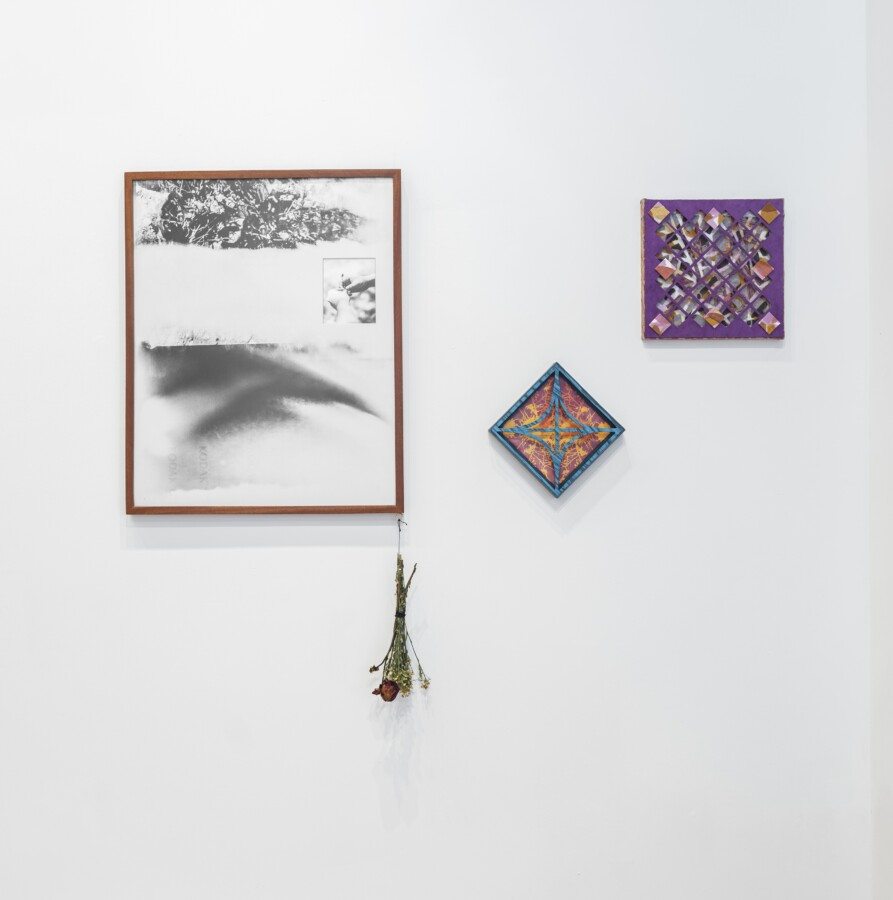

Jesse Ly & Millicent Kennedy: Permeable Images Closing Reception
Don’t miss out on your final chance to experience Jesse Ly and Maven Kennedy: Permeable Images, closing this weekend!
This Saturday, February 28 from 2 – 4pm, meet the artists and spend time with their work.
This event will take place at ACRE Projects, 2921 N. Clark Street. It is free and open to the public.
About the Artists
Jesse Ly is an Asian-American photographic and image-based artist. They hold a bachelor’s degree in Fine Arts with a minor in Art History and a certificate in Critical Visions from the University of Cincinnati’s College of DAAP. They currently are the Graphic Design and Photography Media Facilities Coordinator for Art & Design at the University of Dayton. Ly has had solo exhibitions at spaces including RoyGBiv Gallery – Columbus, OH; Foster Gallery – Dedham, MA; The Neon Heater – Findlay, OH; and Gallery Photoland – Olympia, WA.
Maven Kennedy’s (they/them) practice is interested in how we archive a physical world in flux. Through hand skills including book and box making, natural dyeing, and hand stitching, Kennedy connects to the knowledge of generations of unknown hands who worked to hold their world together. Their work as a whole is interested in connecting two or more things that could seem separate or worn away from one another. Like dyeing and mending, the alchemy is in the labor and material itself, leading to transformation. They received a Bachelor’s Degree from Northeastern Illinois University and MFA from Northern Illinois University where they were awarded the Helen Merritt Fellowship.